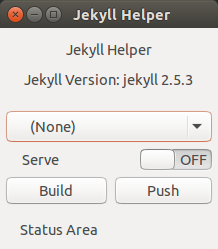
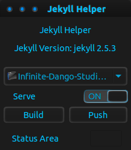

Screenshots

The appearance of Jekyll Helper upon startup. Shown running in Ubuntu using the Ambiance theme.

Jekyll Helper serving a selected website. Shown running in Ubuntu using the Lhun-magol theme.
Return to main page